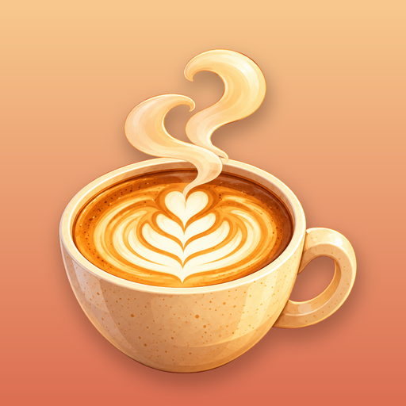

Cozy Crema Cafe
A relaxing coffee shop game for iPhone and Android.
Need a hand?
Questions, bugs or ideas are all welcome. Email us and we'll get back to you as soon as we can.
If something went wrong, it helps to mention your device, and what you were doing when it happened.
Common questions
I bought Full Café. How do I get it back on a new phone?
Open the game, tap the gear on the home screen, and choose Restore purchase. Use the same Apple ID or Google account you bought it with.
I have a code. Where do I redeem it?
During a calming break, tap Have a code? On iPhone you can also redeem it in the App Store app. On Android, choose Redeem code in the Google Play purchase sheet.
Why does the café take a break every few drinks?
We don't show ads. Instead, the counter takes a short calming break every few drinks. The optional Full Café purchase keeps the guests coming and opens up every piece of décor and equipment.
Will I lose my progress if I delete the app?
Yes. Your café is saved only on your phone, so deleting the app deletes your progress. Full Café is tied to your store account, so you can always restore that.